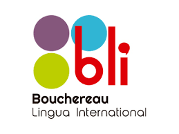
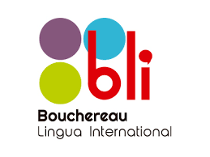

Introduction

Je m'appelle Gabriel Vézina et je suis de Montréal,Québec. Recettement, j'ai eu compléter mon Baccalauréat en Psychologie à l'Université Concordia. Pour la session d'hiver 2020, je fait une une Diplôme universitaire en social media marketing. Pour le futur, j'appliquerai pour une Maîtrise en management des entreprises avec JMSB. Après mes études, j'espère que a commencé une carrière sur la publicité.
Pour loisir, j'aime à lire beaucoup, d'apprendre de faire de nouvelle chose artistiques et apprendre de nouvelles langues.


 
